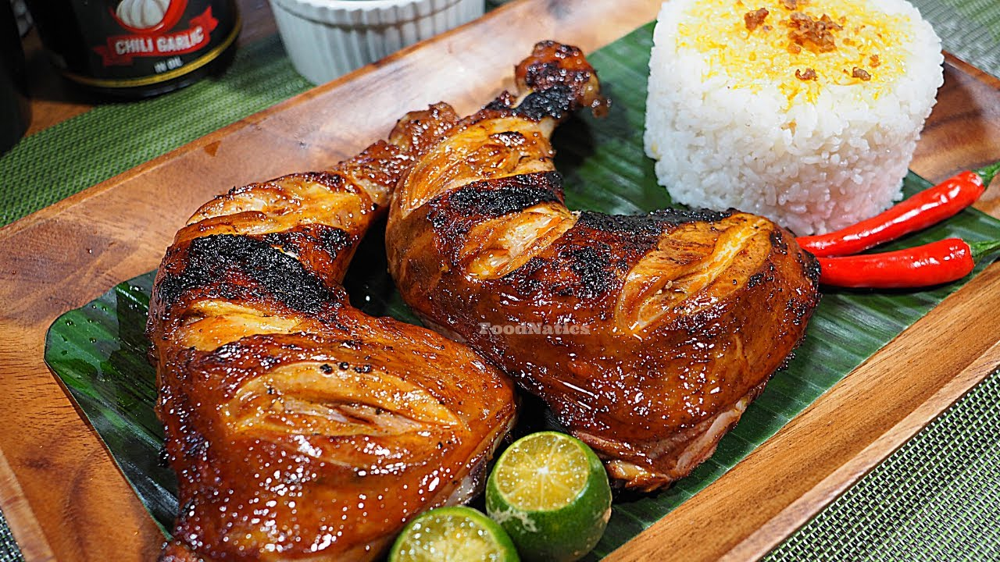

Chicken Inasal

Description:
A delicious Filipino version of chicken barbeque which will surely get you addicted!
You have to try this goodness!
Ingredients:
- 1 kg chicken, cut into serving parts
Marinade Ingredients:
- 1 head garlic, minced
- 1 pc thumb-sized ginger, chopped
- 1 stalk lemongrass, chopped
- ¾ cup vinegar
- ¼ cup calamansi juice
- 3 tbsp brown sugar
- 2 tbsp salt
- ½ tbsp ground pepper
Annatto Oil Ingredients (Can be reserved for future use):
- 1 cup cooking oil
- 500 g chicken skin and/or chicken fat
- 4 tbsp annatto seeds
- 3 cloves garlic, peeled and crushed
- 1 pc bay leaf
Basting Sauce Ingredients:
- 4 tbsp annatto oil
- ½ cup butter, or margarine, melted
- 1 tsp calamansi, or lemon juice
- salt, to taste
How to cook the juiciest Chicken Inasal:
- In a large bowl, add-in and combine all the marinade ingredients. Whisk until well-incorporated.
- In a freezer bag or ziplock, place the chicken parts and pour-in the marinade. Seal the bag and marinate chicken for 1 to 5 hours.
- In a large bowl, add-in and combine all the basting sauce ingredients. Mix well and set aside afterwards.
- Preheat the grilling pan in medium heat.
- Preheat the grilling pan in medium heat.
- Grill the chicken parts for 30 to 50 minutes while generously brushing with basting sauce every 10 minutes.
- Transfer to a serving plate or serving tray and let it rest for 10 minutes. Serve immediately afterwards and enjoy!
Annatto Oil Procedure:
- In a medium saucepan over medium heat, pour-in the cooking oil and add-in the chicken skin and/or chicken fat. Cook for 10 minutes until chicken oil starts to come out. Remove all the chicken pieces using a slotted spoon
- Apply low heat and add-in all the remaining annatto oil ingredients. Cook for 1 to 2 minutes.
- Using a fine-mesh sieve, strain the oil into a jar and discard seeds and aromatics. Set aside.